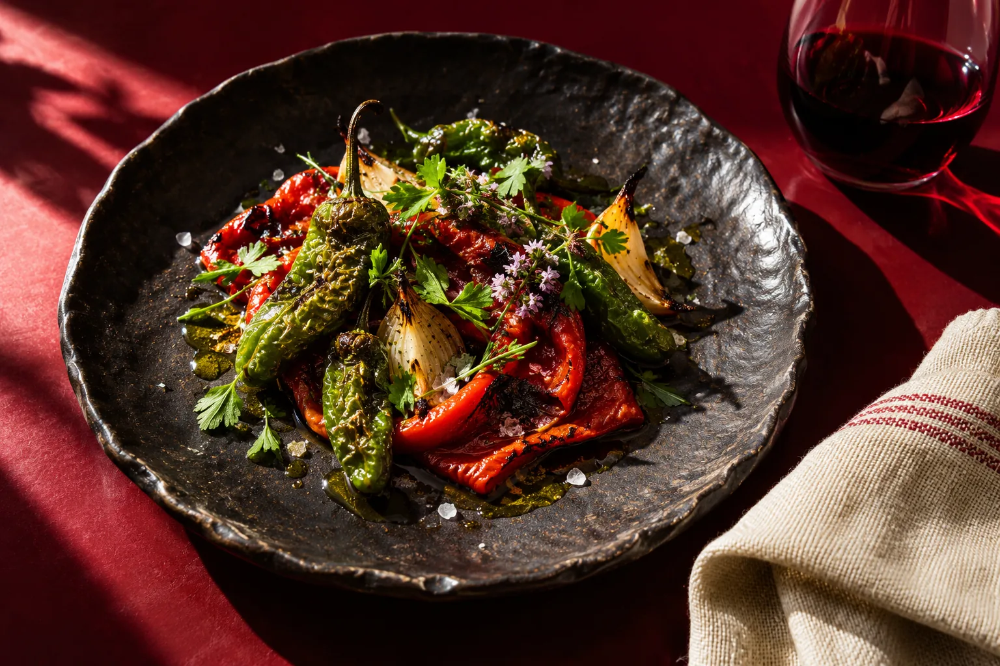
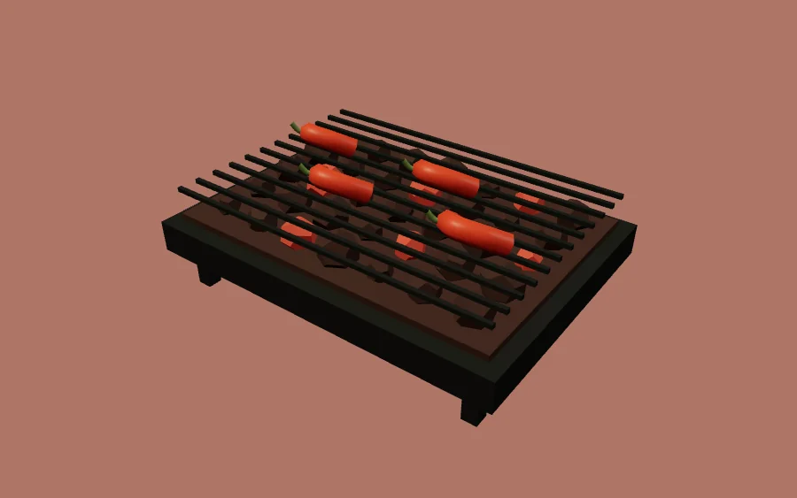

Small plates restaurant
Fire atthe table
A six-seat counter and a short menu built around the embers.
Read the menu
The ember menu
A sample menu for a fictional Basque counter. Pick a course to see what comes off the grill.
Pimientos a la brasa
Blistered peppers, smoked salt and a spoonful of green herb oil.
Table order planner
Build an order from the sample menu and split the estimated bill by the number of guests.
3D model
The ember grill
